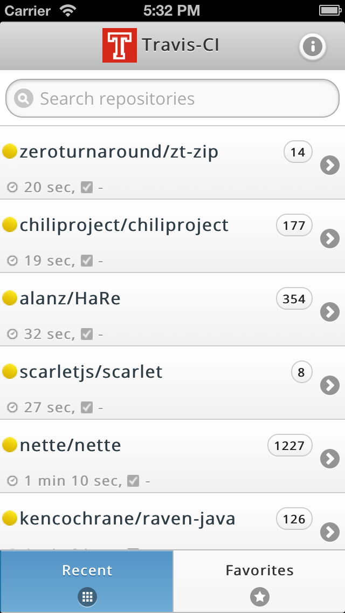

Travis-CI Mobile
Travis-CI Mobile
Android application (done in PhoneGap) for Travis CI.
Project maintained by floydpink Hosted on GitHub Pages — Theme by mattgraham
Features
Recent Builds
By default the app loads into the Recent tab, that shows (and refreshes in realtime) the recent builds running on Travis-CI.

Search Repositories
The search box at the top of the recent builds tab searches builds by author/organization or repository name.


View Latest/Current Build
Tapping on any of the builds navigates into the repository detail screen with the default tab showing the current build.

Favorite Repositories
Repositories can be added to (and removed from) a list of favorites by tapping on the little star icon next to the repository name.

List of favorite repositories could be seen by visiting the Favorites tab at the bottom right.

Build History, Pull Requests etc.
Other tabs in Travis-CI for the repository like Build History, Pull Requests, Branch Summary etc. could be seen tapping the left and right arrows.
Commit/Pull Request Details
More details on the commit or pull request that triggered the build could be seen by expanding the build information section.


Follow the Build Log
Tapping the Follow button would enable auto-scrolling to follow the build log along.